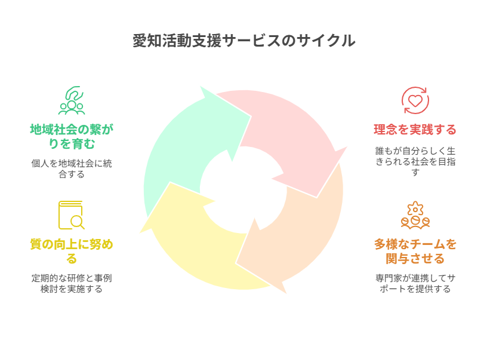

私たちについて
私たちは「誰もが自分らしく生きられる社会」の実現を理念に掲げ、社会的に孤立しがちな方々を支援します。一人ひとりの尊厳と選択を尊重し、地域社会との繋がりを育むことが私たちの使命です。
代表挨拶
愛知活動支援サービスのホームページをご覧いただき、ありがとうございます。
現代社会において、様々な理由で社会との繋がりに困難を感じている方々が増えています。引きこもりや不登校、高齢者の孤立など、一人ひとりが抱える課題は多様で複雑です。
私たちは、専門的な知識と経験を持つスタッフが、お一人お一人の状況に寄り添い、その方らしい社会参加への道筋を一緒に見つけることを使命としています。
地域社会における温かい支援の輪を広げ、誰もが安心して暮らせる社会の実現に向けて、これからも歩み続けてまいります。
愛知活動支援サービス 代表 藤本和廣
ミッション
一人ひとりの個性と尊厳を大切にし、社会参加への道筋を共に歩む
ビジョン
誰もが安心して暮らせる、温かい地域社会の実現
バリュー
寄り添う心・高い専門性・継続性・地域連携
愛知活動支援サービスのサイクル
私たちの支援は、理念の実践から始まり、専門チームが連携し、常に質の向上に努め、そして地域社会の繋がりを育むというサイクルで成り立っています。
包括的なサポートサービス
私たちは、孤立しがちな方々への継続的な支援を行っています。各サービスは独立していますが、必要に応じて複合的に提供することも可能です。すべてのサービスは専門的な知識と経験を持つスタッフによって提供されます。
ひきこもり支援
社会との繋がりを少しずつ取り戻すお手伝いをします。経験豊富なカウンセラーが段階的な社会復帰をサポートします。
不登校相談
学校、家庭、生徒の間に立ち、それぞれの状況に応じた解決策を一緒に考え、学習支援も行います。
カウンセリング
心の悩みや不安、ストレスに専門的な立場からお話を伺います。安心できる環境で自分と向き合えます。
高齢者支援
買い物代行や通院同行など、日常生活をサポートし、安心して暮らせる環境づくりをお手伝いします。
専門知識と経験を持つスタッフ
私たちの専門スタッフは、それぞれの分野で豊富な経験と知識を持ち、お客様一人ひとりに寄り添ったサポートを心がけています。
ツネオカ アイコ 看護師 / 認定心理士 / チャイルドカウンセラー
担当サービス: 引きこもり支援, 不登校相談, カウンセリング, 高齢者支援
初めまして。総合病院、デイサービスで看護師として20年ほど勤務し、現在児童発達支援にも携わっています。自身の子育てに悩んでいた日々はとても辛いものでした。当時は知識がなく、相談する人も場所もわからないまま1人でもがいていました。人に話せることがどれだけ意味深いかを経験しました。少しでも、辛い気持ち、モヤモヤした気持ちが楽になれば、、。その人らしくいられることを願い、そのお手伝いができればと思っています。お気軽にご相談ください。カウンセラー、不登校支援、引きこもり支援などの他、高齢者支援もお気軽にどうぞ。
中山 あさみ パラリーガル
担当サービス: カウンセリング
はじめまして。ワーママとして2人の子供を育て上げてきました。そのため、仕事と育児の両立の大変さ、人間関係や子供に関する悩み等様々な問題に寄り添えればと思っております。また、パラリーガルの認定資格もありますので、法的支援が必要な場合は、弁護士との橋渡し役にもなれます。お気軽にお問い合わせください。よろしくお願いいたします。
神谷 亮太郎 カウンセラー
担当サービス: カウンセリング, 高齢者支援, 買い物代行
はじめまして。カウンセリングはクライエントさんの声にじっくり耳を傾けることを大切にしています。今、どんなことに悩んでいるのか。不安やイライラ、どうしたらいいか分からない状態、気分の落ち込みなどを、話をすることで、つらい気持ちが少しでも楽になれるよう気持ちを受け止めていきたいと思います。又、クライエントさんの想いや価値観を大切にしながら、今の生きづらさが減って、自分らしく楽に生きられるようにお役に立ちたいと思っています。
古橋 渉 介護福祉士
担当サービス: 高齢者支援, カウンセリング
こんにちは、古橋渉と申します。介護福祉士として長年の経験を積んできました。高齢者の皆さまの日常生活をサポートし、安心して過ごせる環境づくりに取り組んでいます。また、ご家族の方々のお悩みやご相談にも真摯に対応させていただきます。一人ひとりのペースに合わせて、丁寧にサポートいたします。
岩田 煌空鳳 (かぐや) カウンセラー
担当サービス: カウンセリング
閲覧頂きありがとうございます。初めまして岩田煌空鳳（かぐや）と申します。僕はまだ20歳で人生経験が浅いですが、特に若い世代の方達には、色々な話をより親身に近くで貴方のお話を聴けると思います。あなたが自然と笑えるようになるまで色々なサポートをしていきたいと考えています。
藤本 和廣 代表
担当サービス: カウンセリング (恋愛, 仕事, 悩み事全般), 買い物代行
初めまして。代表の藤本と申します。私自身の様々な経験を活かし、クライエントさんの心が少しでも軽くなるように努めたいと考えています。
よくあるご質問
サービスに関するご不明な点は、まずこちらをご確認ください。
A. クレジットカード決済（Stripeを利用）と、現金でのお支払いに対応しております。現金でのお支払いをご希望の場合は、別途ご相談ください。
A. ご予約の24時間前までは無料でキャンセル可能です。24時間前を過ぎますと50%、当日キャンセルの場合は100%のキャンセル料金が発生いたします。ただし、緊急事態や体調不良など、やむを得ない事情の場合は個別にご相談に応じますので、ご安心ください。
A. 対面でのカウンセリング・支援のほか、ご希望に応じてオンラインでのご相談も可能です。遠方にお住まいの方や、外出が難しい方もお気軽にご利用いただけます。
A. はい、もちろん可能です。ご本人様が相談をためらわれている場合など、まずはご家族の方だけで状況をお聞かせいただくことも非常に有効です。ご家族の方向けのサポートやアドバイスも行っております。
まずはお話、聞かせてください
一人で悩まず、専門家にご相談ください。ご本人様からでも、ご家族の方からでも、
最初の一歩を私たちが全力でサポートします。